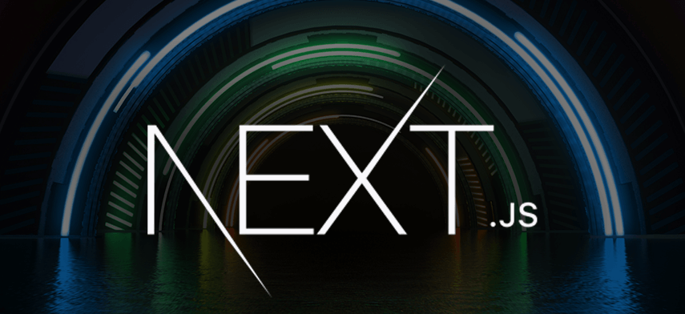
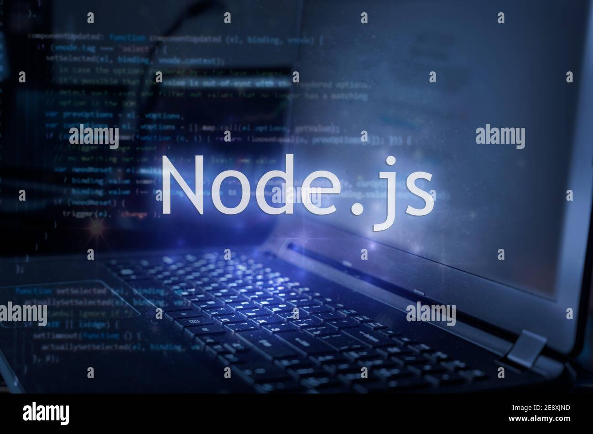

FRONTEND TECHNOLOGIES
A Front-End Developer is someone who creates websites and web applications. The difference between Front-End and Back-End is that Front-End refers to how a web page looks, while back-end refers to how it works. You can think of Front-End as client-side and Back-End as server-side. The basic languages for Front-End Development are HTML, CSS, and JavaScript.
The main responsibility of the Front-End Developer is the User interface. Simply put, create things that the user sees. Tip: If you are curious about how to become a front-end developer, you can read our How To Become a Front-End Developer Tutorial.
HTML

CSS
JavaScript

ReactJS

AngularJS
VueJS

NextJS
Bootstrap

Sass

Flutter

BACKEND TECHNOLOGIES
Backend Development refers to the server-side development of the web application. It is the part of the application where the server and database reside and the logics is build to perform operations. It includes the main features and functionalities of the application on the server. Programming languages for the backend are mainly Node. JS (for JavaScript), Django (for Python), Spring (Java), etc.
JS+NodeJS: With JavaScript being the most demanding programming language, you can explore various new
concepts and build a very amazing website. It is used to build interactive and dynamic websites. For JS, we
have a runtime environment which is NodeJS, which allows you to run JavaScript on the server. We also have a
framework like Express.JS built on on
Python+Django:Python is the easiest of all programming languages and with Django, it plays a perfect
combination to build a website. With less code, you can build better and more easy web applications. Python
is most commonly used for developing websites and it performs quicker implementations. Django is the most
secure and scalable framework one should work
PHP+Laravel:PHP (HyperText Preprocessor) is a general-purpose scripting language well suited for web
development. It is a fast, flexible, and pragmatic language which powers everything from blogs to the most
popular websites. Laravel is an open-source framework used to build a wide range of web applications. It is
purely a server-side framework that manages data and uses MVC (Model View Controller) to break an
application’s back-end architecture into logical parts making it easier to build.
Java

Ruby
NodeJs

PHP

Python
C Sharp

MERN
Web development refers to the creating, building, and maintaining of websites. It includes aspects such as web design, web publishing, web programming, and database management. One of the most famous stack that is used for Web Development is MERN stack. This stack provides an end-to-end framework for the developers to work in and each of these technologies play a big part in the development of web applications.
MongoDB

Express

React
Node
MEAN
In the world of full-stack development, the MEAN stack has became one of the top choice for building dynamic and robust web applications. Web development refers to the creating, building, and maintaining of websites. It includes aspects such as web design, web publishing, web programming, and database management. This stack provides an end-to-end framework for the developers to work in and each of these technologies play a big part in developing websites of web applications. It comprises of 4 technologies namely: MongoDB, Express, Angular, and Node JS. It is designed to make the development process smoother and easier.
MongoDB
Express
React
Node